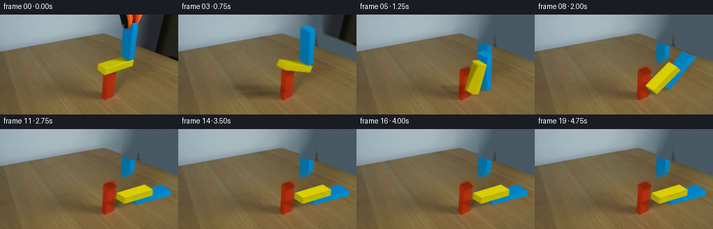
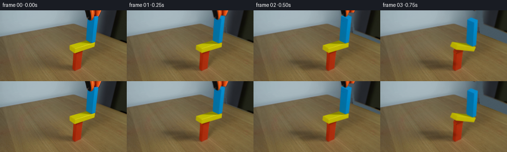
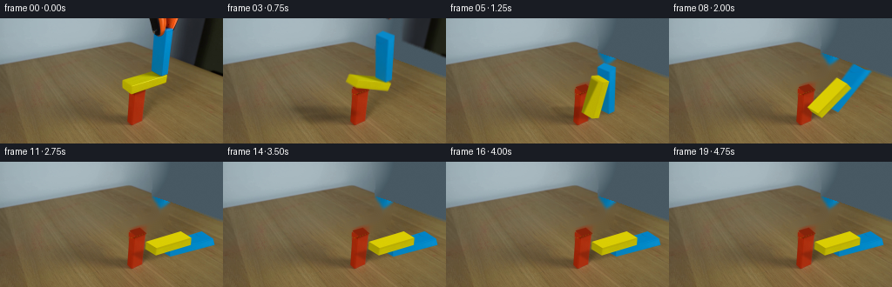
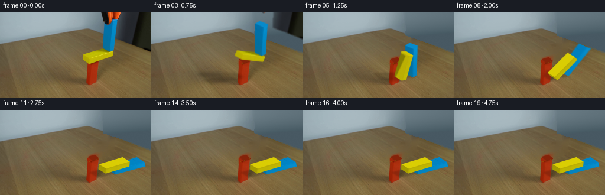
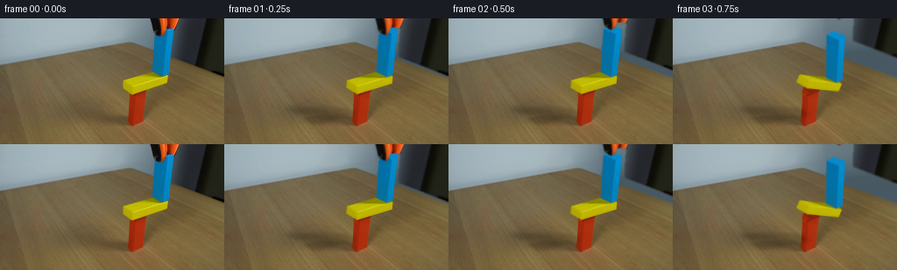

CODING AGENTS AS PIXEL WORLD MODELS
traex/GPT-6.1-Sol · 0181
点击播放 · 原生 RGB 像素
逐轮保存的候选
回放视频、检查图与代码变化。
每份候选均可单独播放。实际图片检查记录在下方工具轨迹中。
候选 01播放与检查图
点击播放 · 原生 RGB 像素


展开代码变化
--- 上一保存版本
+++ 本次保存版本
@@ -0,0 +1,312 @@
+from pathlib import Path
+import math
+import numpy as np
+import cv2
+from PIL import Image
+import artifact_io
+
+ROOT = Path(__file__).resolve().parent
+W,H=256,144
+S=3
+EX=np.array([1.,-.3]); EY=np.array([1.,.6]); EZ=np.array([.08,-1.])
+ORIGIN=np.array([136.48,115.])
+VIEW=np.array([-1.048,.976,.9]); VIEW/=np.linalg.norm(VIEW)
+LIGHT=np.array([-.70,-.38,-1.])
+
+def cross(a,b): return a[0]*b[1]-a[1]*b[0]
+class Body:
+ def __init__(self,x,z,w,h,m=1,static=False):
+ self.p=np.array([x,z],float); self.size=np.array([w,h]);self.inv=0 if static else 1/m
+ self.I=0 if static else 12/(m*(w*w+h*h));self.a=0.;self.v=np.zeros(2);self.av=0.
+ def verts(self):
+ c,s=math.cos(self.a),math.sin(self.a);R=np.array([[c,-s],[s,c]])
+ return (np.array([[-1,-1],[1,-1],[1,1],[-1,1]])*self.size/2)@R.T+self.p
+ def vel(self,r): return self.v+self.av*np.array([-r[1],r[0]])
+ def impulse(self,j,r): self.v+=j*self.inv;self.av+=cross(r,j)*self.I
+
+def clip(subject,poly):
+ for j in range(len(poly)):
+ a=poly[j];edge=poly[(j+1)%len(poly)]-a
+ def side(p):return cross(edge,p-a)
+ inp=subject;subject=[]
+ if len(inp)==0:break
+ prev=inp[-1];sp=side(prev)
+ for cur in inp:
+ sc=side(cur)
+ if (sc>=0)!=(sp>=0):subject.append(prev+(cur-prev)*(sp/(sp-sc)))
+ if sc>=0:subject.append(cur)
+ prev=cur;sp=sc
+ return np.array(subject)
+
+def collide(A,B):
+ va,vb=A.verts(),B.verts();small=1e9;n=None
+ for V in (va,vb):
+ for k in range(2):
+ edge=V[k+1]-V[k];axis=np.array([-edge[1],edge[0]]);axis/=np.linalg.norm(axis)
+ aa=va@axis;bb=vb@axis;over=min(aa.max(),bb.max())-max(aa.min(),bb.min())
+ if over<-.001:return None
+ if over<small:small=over;n=axis
+ if (B.p-A.p)@n<0:n=-n
+ pol=clip(list(va),vb)
+ if len(pol)==0:return None
+ tangent=np.array([-n[1],n[0]]);proj=pol@tangent
+ cs=[pol[np.argmin(proj)],pol[np.argmax(proj)]]
+ if np.linalg.norm(cs[0]-cs[1])<.1:cs=cs[:1]
+ return n,small,cs
+
+def solve(A,B,n,pen,points,dt):
+ for p in points:
+ ra=p-A.p;rb=p-B.p;dv=B.vel(rb)-A.vel(ra);vn=dv@n
+ denom=A.inv+B.inv+A.I*cross(ra,n)**2+B.I*cross(rb,n)**2
+ if denom==0:continue
+ bias=.18*max(pen-.015,0)/dt
+ j=max(0,(-vn+bias)/denom)
+ A.impulse(-j*n,ra);B.impulse(j*n,rb)
+ dv=B.vel(rb)-A.vel(ra);t=np.array([-n[1],n[0]])
+ den=A.inv+B.inv+A.I*cross(ra,t)**2+B.I*cross(rb,t)**2
+ jt=np.clip(-(dv@t)/den,-j*.50,j*.50)
+ A.impulse(-jt*t,ra);B.impulse(jt*t,rb)
+
+def simulate():
+ yellow=Body(20,40,40,8,1);blue=Body(37,68.5,6,49,1.0)
+ red=Body(10,18,14,36,static=True);floor=Body(100,-10,800,20,static=True)
+ bodies=[yellow,blue,red,floor];states=[];dt=1/120
+ for it in range(4*120+1):
+ states.append([(q.p.copy(),q.a) for q in bodies[:2]])
+ for q in bodies[:2]:
+ q.v[1]-=235*dt;q.v*=.9995;q.av*=.9995;q.p+=q.v*dt;q.a+=q.av*dt
+ cols=[]
+ for ai,bi in [(0,1),(0,2),(1,2),(0,3),(1,3)]:
+ A,B=bodies[ai],bodies[bi];col=collide(A,B)
+ if col:cols.append((A,B,*col))
+ for _ in range(10):
+ for A,B,n,pen,cs in cols:solve(A,B,n,pen,cs,dt)
+ return states
+
+def project(p):
+ p=np.asarray(p);return ORIGIN+p[...,0,None]*EX+p[...,1,None]*EY+p[...,2,None]*EZ
+
+def rotation(a):
+ c,s=np.cos(a),np.sin(a)
+ return np.array([[c,0,-s],[0,1,0],[s,0,c]])
+
+# Four corners in the same order on every local wooden face.
+FACES={
+ 'top':([[-1,-1,1],[1,-1,1],[1,1,1],[-1,1,1]],[0,0,1]),
+ 'bottom':([[-1,-1,-1],[1,-1,-1],[1,1,-1],[-1,1,-1]],[0,0,-1]),
+ 'front':([[-1,1,1],[1,1,1],[1,1,-1],[-1,1,-1]],[0,1,0]),
+ 'back':([[-1,-1,1],[1,-1,1],[1,-1,-1],[-1,-1,-1]],[0,-1,0]),
+ 'left':([[-1,-1,1],[-1,1,1],[-1,1,-1],[-1,-1,-1]],[-1,0,0]),
+ 'right':([[1,-1,1],[1,1,1],[1,1,-1],[1,-1,-1]],[1,0,0]),
+}
+
+def texture(im,quad,kind,default):
+ n=128;quad=np.array(quad,np.float32)
+ dst=np.array([[0,0],[n-1,0],[n-1,n-1],[0,n-1]],np.float32)
+ a=cv2.warpPerspective(im,cv2.getPerspectiveTransform(quad,dst),(n,n),flags=cv2.INTER_LINEAR).astype(float)
+ r,g,b=a.transpose(2,0,1)
+ if kind=='yellow':valid=(g>169)&(r>170)&(b<60)&(abs(r-g)<30)
+ elif kind=='yellowend':valid=(g>140)&(r>145)&(b<35)&(abs(r-g)<35)
+ elif kind=='bluedark':valid=(g>95)&(g<130)&(r<24)&(b>140)&(b<188)
+ else:valid=(g>118)&(r<27)&(b>178)
+ medians=[]
+ for row in range(n):
+ vals=a[row,valid[row]]
+ medians.append(np.median(vals,axis=0) if len(vals)>8 else np.full(3,np.nan))
+ medians=np.array(medians)
+ for ch in range(3):
+ good=np.isfinite(medians[:,ch]);inds=np.flatnonzero(good)
+ if len(inds):medians[:,ch]=np.interp(np.arange(n),inds,medians[good,ch])
+ else:medians[:,ch]=default[ch]
+ fill=cv2.GaussianBlur(np.tile(medians[:,None,:],(1,n,1)).astype(np.float32),(0,0),2)
+ # Retain fine paint variation from the photograph rather than synthetic grain.
+ a=np.where(valid[...,None],a,fill)
+ a=cv2.GaussianBlur(a.astype(np.float32),(0,0),.5)
+ rng=np.random.default_rng(29)
+ a+=rng.normal(0,.4,(n,n,1))
+ return np.clip(a,0,255).astype(np.uint8)
+
+def constant_texture(color,seed=1):
+ rng=np.random.default_rng(seed);noise=cv2.GaussianBlur(rng.normal(0,1.1,(128,128)).astype(np.float32),(0,0),.6)
+ return np.clip(np.array(color)[None,None,:]+noise[...,None],0,255).astype(np.uint8)
+
+
+def build_plate(im):
+ yy,xx=np.indices((H,W));r,g,b=im.astype(float).transpose(2,0,1)
+ yellow=(g>97)&(r>100)&(b<g*.48)&(r<g*1.5)&(xx>136)&(xx<196)&(yy>57)&(yy<89)
+ blue=(b>g*1.15)&(g>r*1.7)&(b>90)&(xx>168)&(xx<202)
+ obj=(yellow|blue).astype(np.uint8)*255
+ obj=cv2.dilate(obj,np.ones((3,3),np.uint8))
+ # Existing permanent tabletop and red support stay photographed.
+ tablemask=obj.copy();tablemask[yy<60]=0
+ plate=cv2.inpaint(im,tablemask,5,cv2.INPAINT_TELEA)
+ # Reveal the red block's previously occluded cap and short upper edge.
+ cap=np.array([[149,79.4],[159.7,76],[167,81.7],[155.5,86.8]],np.float32)
+ cv2.fillConvexPoly(plate,np.round(cap).astype(np.int32),(132,35,10),cv2.LINE_AA)
+ cv2.line(plate,(150,81),(156,86),(148,37,11),1,cv2.LINE_AA)
+ # Side below the cap (mostly invisible until the plank tips).
+ cv2.fillConvexPoly(plate,np.array([[148,81],[155,86],[154,96],[148,91]],np.int32),(158,39,9),cv2.LINE_AA)
+ # Keep each actually photographed red pixel.
+ red=(r>g*1.5)&(r>113)&(g<78)&(xx>143)&(xx<171)&(yy>80)&(yy<124)
+ plate[red]=im[red]
+
+ # Neutral wall fit, using only measured background RGB samples.
+ edge=np.where(xx<139,52-.181*xx,27+.337*(xx-139))
+ valid=(yy<edge-3)&(xx<172)&(b>g)&(g>r)&(g>110)
+ def features(x,y):
+ x=(x-120)/120.;y=(y-25)/70
+ return np.stack([np.ones_like(x),x,y,x*x,x*y,y*y,x*x*x],-1)
+ X=features(xx,yy)
+ coef=np.linalg.lstsq(X[valid],im[valid],rcond=None)[0]
+ wall=X@coef
+ wall=np.maximum(wall,[72,89,99]);wall=np.minimum(wall,[175,192,200])
+ wall+=np.random.default_rng(61).normal(0,.28,(H,W,1))
+ # All parts of the orange-black head and the dark handle entering at right.
+ tool=np.zeros((H,W),np.uint8)
+ outline=np.array([[171,-2],[257,-2],[257,68],[250,66],[230,57],[201,46],[198,21],[189,21],[177,20],[174,13]],np.int32)
+ cv2.fillPoly(tool,[outline],255)
+ # Soft photographic shadow around the handle is recovered with the wall.
+ wallmask=(tool>0)&(yy<edge)
+ plate[wallmask]=np.clip(wall[wallmask],0,255).astype(np.uint8)
+ # The head overlaps this small region outside the broad handle polygon.
+ m=((obj>0)&(yy<edge))
+ plate[m]=np.clip(wall[m],0,255).astype(np.uint8)
+ # Small strip of obscured tabletop along its back edge.
+ m=(tool>0)&(yy>=edge)
+ if m.any():
+ tab=cv2.inpaint(plate,(m.astype(np.uint8)*255),7,cv2.INPAINT_TELEA)
+ plate[m]=tab[m]
+ # Foreground blocks are not part of the tool image, even at their edge.
+ tool_alpha=tool.astype(np.float32)/255
+ bmask=(blue.astype(np.uint8)*255)
+ bmask=cv2.dilate(bmask,np.ones((3,3),np.uint8))
+ tool_alpha[bmask>0]=0
+ # Anti-aliased outline, but keep its original texture.
+ tool_alpha=cv2.GaussianBlur(tool_alpha,(0,0),.35)
+ tool_alpha[bmask>0]=0
+ return plate,tool_alpha
+
+
+def main():
+ im=np.array(Image.open(ROOT/'first_frame.png').convert('RGB'))
+ plate,tool_alpha=build_plate(im)
+ cv2.imwrite(str(ROOT/'.tmp/plate.png'),cv2.cvtColor(plate,cv2.COLOR_RGB2BGR))
+ tex={}
+ tex['yellow']={
+ 'top':texture(im,[[140,71],[180,59],[192,66],[152,78]],'yellow',[192,186,2]),
+ 'front':texture(im,[[152,78],[192,66],[191,74],[151,87]],'yellow',[192,181,3]),
+ 'left':texture(im,[[140,71],[152,78],[151,87],[140,79]],'yellowend',[177,166,2])}
+ tex['yellow']['bottom']=constant_texture([187,176,3],9)
+ tex['yellow']['back']=tex['yellow']['front'];tex['yellow']['right']=tex['yellow']['left']
+ tex['blue']={
+ 'left':texture(im,[[177,11],[190.5,17],[185.5,66],[173.8,60.6]],'bluedark',[3,112,163]),
+ 'front':texture(im,[[190.5,17],[198,12],[192,63.6],[185.5,66]],'blue',[3,134,197]),
+ 'top':constant_texture([8,139,204],5)}
+ tex['blue']['right']=tex['blue']['left'];tex['blue']['back']=tex['blue']['front']
+ tex['blue']['bottom']=constant_texture([4,112,166],6)
+ states=simulate()
+ canvas_base=cv2.resize(plate,(W*S,H*S),interpolation=cv2.INTER_CUBIC).astype(np.float32)
+ size={'yellow':np.array([40,12,8.]),'blue':np.array([6,12,49.])}
+ src=np.array([[0,0],[127,0],[127,127],[0,127]],np.float32)
+ def state_at(t):
+ t=max(0,t-.48);f=min(t*120,len(states)-1.001);i=int(f);a=f-i
+ return [(states[i][j][0]*(1-a)+states[i+1][j][0]*a,states[i][j][1]*(1-a)+states[i+1][j][1]*a) for j in range(2)]
+ def geometry(t):
+ result=[]
+ for name,(p,a) in zip(['yellow','blue'],state_at(t)):
+ R=rotation(a);center=np.array([p[0],6,p[1]])
+ faces=[]
+ for fn,(corners,normal) in FACES.items():
+ local=np.array(corners)*size[name]/2
+ world=local@R.T+center;norm=R@np.array(normal)
+ if norm@VIEW<=.012:continue
+ projected=project(world)
+ # Small, measured perspective corrections on the tall blue prism.
+ if name=='blue':
+ offsets=[]
+ for c in corners:
+ key=tuple(c)
+ d={(-1,-1,-1):[-.2,.6],(-1,1,-1):[-.5,-1.2],(1,1,-1):[0,-1.8],(1,-1,-1):[0,-1.2],
+ (-1,-1,1):[-.92,0],(-1,1,1):[.58,-1.2],(1,1,1):[2.08,-4.4],(1,-1,1):[.58,-2.2]}[key]
+ ca,sa=math.cos(a),math.sin(a)
+ offsets.append([d[0]*ca+d[1]*sa*.7,-d[0]*sa*.7+d[1]*ca])
+ projected+=np.array(offsets)
+ faces.append((fn,world,projected,norm))
+ result.append((name,faces,R,center))
+ return result
+
+ def render(t):
+ canvas=canvas_base.copy();geom=geometry(t)
+ # Object shadows on the wooden surface, from the same directional light.
+ sm=np.zeros((H*S,W*S),np.float32)
+ for name,faces,R,c in geom:
+ verts=np.array([[x,y,z] for x in [-1,1] for y in [-1,1] for z in [-1,1]])*size[name]/2
+ world=verts@R.T+c
+ shadow=world+world[:,2,None]*LIGHT
+ pts=project(shadow)*S
+ hull=cv2.convexHull(pts.astype(np.float32)).astype(np.int32)
+ layer=np.zeros_like(sm);cv2.fillConvexPoly(layer,hull,1,cv2.LINE_AA)
+ altitude=max(0,c[2]-size[name][2]*abs(R[2,2])/2)
+ layer=cv2.GaussianBlur(layer,(0,0),S*(1.1+altitude*.025))
+ sm=np.maximum(sm,layer*(.18 if name=='yellow' else .17))
+ canvas*=1-sm[...,None]
+ # Painter ordering between separate bodies; convex-face visibility is analytic.
+ ordered=sorted(geom,key=lambda q:float(q[3]@VIEW))
+ for name,faces,R,c in ordered:
+ for fn,world,proj,norm in faces:
+ dest=(proj*S).astype(np.float32)
+ M=cv2.getPerspectiveTransform(src,dest)
+ img=cv2.warpPerspective(tex[name][fn],M,(W*S,H*S),flags=cv2.INTER_LINEAR).astype(np.float32)
+ alpha=np.zeros((H*S,W*S),np.uint8)
+ cv2.fillConvexPoly(alpha,np.round(dest).astype(np.int32),255,cv2.LINE_AA)
+ # Correct texture borders (warp sampling could otherwise add a dark hairline).
+ valid=cv2.warpPerspective(np.full((128,128),255,np.uint8),M,(W*S,H*S))
+ bad=(alpha>0)&(valid<240)
+ if bad.any():
+ med=np.median(tex[name][fn].reshape(-1,3),axis=0);img[bad]=med
+ # Modest illumination change as the surface turns toward or away from the lamp.
+ local_normal=np.array(FACES[fn][1]);lamp=np.array([.25,.3,1.]);lamp/=np.linalg.norm(lamp)
+ rest=max(0,float(local_normal@lamp));now=max(0,float(norm@lamp))
+ shade=np.clip((.77+.23*now)/(.77+.23*rest),.72,1.17)
+ img*=shade
+ if name=='yellow':
+ other=geom[1];bp=other[3];bR=other[2]
+ bverts=np.array([[x,y,z] for x in [-1,1] for y in [-1,1] for z in [-1,1]])*size['blue']/2@bR.T+bp
+ denom=norm@LIGHT
+ if abs(denom)>.15:
+ rays=(world[0]-bverts)@norm/denom
+ hit=bverts+rays[:,None]*LIGHT
+ if np.all(rays>=-.05):
+ sh=np.zeros_like(sm);hp=project(hit)*S
+ hull=cv2.convexHull(hp.astype(np.float32)).astype(np.int32)
+ cv2.fillConvexPoly(sh,hull,1,cv2.LINE_AA)
+ sh=cv2.GaussianBlur(sh,(0,0),.70*S)
+ img*=1-.29*sh[...,None]
+ a=alpha.astype(float)[...,None]/255
+ canvas=canvas*(1-a)+img*a
+ # The native grabber releases the block, and retreats through the top-right.
+ if t<1.65:
+ # Carefully eased lift, no camera or scene motion.
+ q=max(0,t-.18)
+ dx=3*q+18*q*q;dy=-3*q-53*q*q
+ if t<.32:dx+=.6*math.sin(t/.32*math.pi)
+ mat=np.array([[1,0,dx],[0,1,dy]],np.float32)
+ ta=cv2.warpAffine(tool_alpha,mat,(W,H),flags=cv2.INTER_LINEAR)
+ premult=im.astype(float)*tool_alpha[...,None]
+ tp=cv2.warpAffine(premult.astype(np.float32),mat,(W,H),flags=cv2.INTER_LINEAR)
+ ta=cv2.resize(ta,(W*S,H*S),interpolation=cv2.INTER_LINEAR)
+ tp=cv2.resize(tp,(W*S,H*S),interpolation=cv2.INTER_CUBIC)
+ canvas=canvas*(1-ta[...,None])+tp
+ return np.clip(cv2.resize(canvas,(W,H),interpolation=cv2.INTER_AREA),0,255)
+
+ frames=[im.copy()]
+ for i in range(1,20):
+ t=i/4
+ # Short camera exposure at real-time speed; contact and final rest stay crisp.
+ subs=[render(t+j) for j in [-.014,0,.014]]
+ out=np.mean(subs,axis=0).round().astype(np.uint8)
+ frames.append(out)
+ frames=np.stack(frames)
+ artifact_io.save(frames,ROOT)
+
+if __name__=='__main__':main()
候选 02播放与检查图
点击播放 · 原生 RGB 像素

展开代码变化
--- 上一保存版本
+++ 本次保存版本
@@ -138,7 +138,8 @@
obj=(yellow|blue).astype(np.uint8)*255
obj=cv2.dilate(obj,np.ones((3,3),np.uint8))
# Existing permanent tabletop and red support stay photographed.
- tablemask=obj.copy();tablemask[yy<60]=0
+ edge=np.where(xx<139,52-.181*xx,27+.337*(xx-139))
+ tablemask=obj.copy();tablemask[yy<edge]=0
plate=cv2.inpaint(im,tablemask,5,cv2.INPAINT_TELEA)
# Reveal the red block's previously occluded cap and short upper edge.
cap=np.array([[149,79.4],[159.7,76],[167,81.7],[155.5,86.8]],np.float32)
@@ -163,7 +164,7 @@
wall+=np.random.default_rng(61).normal(0,.28,(H,W,1))
# All parts of the orange-black head and the dark handle entering at right.
tool=np.zeros((H,W),np.uint8)
- outline=np.array([[171,-2],[257,-2],[257,68],[250,66],[230,57],[201,46],[198,21],[189,21],[177,20],[174,13]],np.int32)
+ outline=np.array([[170,-2],[257,-2],[257,69],[250,67],[230,59],[195,45],[197,13],[188,23],[175,22],[172,13]],np.int32)
cv2.fillPoly(tool,[outline],255)
# Soft photographic shadow around the handle is recovered with the wall.
wallmask=(tool>0)&(yy<edge)
@@ -177,7 +178,9 @@
tab=cv2.inpaint(plate,(m.astype(np.uint8)*255),7,cv2.INPAINT_TELEA)
plate[m]=tab[m]
# Foreground blocks are not part of the tool image, even at their edge.
- tool_alpha=tool.astype(np.float32)/255
+ tool_actual=np.zeros_like(tool)
+ cv2.fillPoly(tool_actual,[np.array([[172,-2],[257,-2],[257,67],[250,64],[230,56],[198,44],[199,12],[188,22],[176,20],[174,13]],np.int32)],255)
+ tool_alpha=tool_actual.astype(np.float32)/255
bmask=(blue.astype(np.uint8)*255)
bmask=cv2.dilate(bmask,np.ones((3,3),np.uint8))
tool_alpha[bmask>0]=0
@@ -205,7 +208,7 @@
tex['blue']['right']=tex['blue']['left'];tex['blue']['back']=tex['blue']['front']
tex['blue']['bottom']=constant_texture([4,112,166],6)
states=simulate()
- canvas_base=cv2.resize(plate,(W*S,H*S),interpolation=cv2.INTER_CUBIC).astype(np.float32)
+ canvas_base=cv2.resize(plate,(W*S,H*S),interpolation=cv2.INTER_NEAREST).astype(np.float32)
size={'yellow':np.array([40,12,8.]),'blue':np.array([6,12,49.])}
src=np.array([[0,0],[127,0],[127,127],[0,127]],np.float32)
def state_at(t):
候选 03播放与检查图
点击播放 · 原生 RGB 像素
展开代码变化
--- 上一保存版本
+++ 本次保存版本
@@ -140,7 +140,7 @@
# Existing permanent tabletop and red support stay photographed.
edge=np.where(xx<139,52-.181*xx,27+.337*(xx-139))
tablemask=obj.copy();tablemask[yy<edge]=0
- plate=cv2.inpaint(im,tablemask,5,cv2.INPAINT_TELEA)
+ plate=cv2.inpaint(im,obj,5,cv2.INPAINT_TELEA)
# Reveal the red block's previously occluded cap and short upper edge.
cap=np.array([[149,79.4],[159.7,76],[167,81.7],[155.5,86.8]],np.float32)
cv2.fillConvexPoly(plate,np.round(cap).astype(np.int32),(132,35,10),cv2.LINE_AA)
候选 04播放与检查图
点击播放 · 原生 RGB 像素


展开代码变化
--- 上一保存版本
+++ 本次保存版本
@@ -139,7 +139,6 @@
obj=cv2.dilate(obj,np.ones((3,3),np.uint8))
# Existing permanent tabletop and red support stay photographed.
edge=np.where(xx<139,52-.181*xx,27+.337*(xx-139))
- tablemask=obj.copy();tablemask[yy<edge]=0
plate=cv2.inpaint(im,obj,5,cv2.INPAINT_TELEA)
# Reveal the red block's previously occluded cap and short upper edge.
cap=np.array([[149,79.4],[159.7,76],[167,81.7],[155.5,86.8]],np.float32)
@@ -160,6 +159,11 @@
X=features(xx,yy)
coef=np.linalg.lstsq(X[valid],im[valid],rcond=None)[0]
wall=X@coef
+ # Continue the measured wall falloff smoothly behind the departing handle.
+ far=xx>175
+ extension=features(np.minimum(xx,175),yy)@coef
+ extension-=18*(1-np.exp(-np.maximum(xx-175,0)/90))[...,None]
+ wall[far]=extension[far]
wall=np.maximum(wall,[72,89,99]);wall=np.minimum(wall,[175,192,200])
wall+=np.random.default_rng(61).normal(0,.28,(H,W,1))
# All parts of the orange-black head and the dark handle entering at right.
可观测工具轨迹
实际执行的命令与返回图片。
命令 1exit 0
/bin/bash -lc "ls -la && cat prompt.txt && printf '\\n---RULES---\\n' && cat GENERATION_RULES.md"
命令 2exit 0
/bin/bash -lc "cat artifact_io.py && python - <<'PY'
from PIL import Image
import numpy as np
im=np.array(Image.open('first_frame.png').convert('RGB'))
print(im.shape)
# kmeans allowed numeric
import cv2
z=im.reshape(-1,3).astype(np.float32)
_, labels, centers=cv2.kmeans(z,12,None,(cv2.TERM_CRITERIA_EPS+cv2.TERM_CRITERIA_MAX_ITER,40,.1),10,cv2.KMEANS_PP_CENTERS)
print('centers',np.round(centers).astype(int))
l=labels.reshape(im.shape[:2]); chars='0123456789AB'
for y in range(0,144,3):
print(''.join(chars[np.bincount(l[y:y+3,x:x+3].ravel(),minlength=12).argmax()] for x in range(0,256,3)))
PY"命令 3exit 0
/bin/bash -lc "python - <<'PY'
from PIL import Image
import numpy as np, cv2
im=np.array(Image.open('first_frame.png')); R,G,B=im.transpose(2,0,1).astype(float)
a=np.full(R.shape,'.',dtype='<U1')
a[(B>G*1.18)&(G>R*1.6)&(B>90)]='b'
a[(R>G*1.6)&(G>B*1.3)&(R>105)]='r'
a[(R>G*1.4)&(G>65)&(R>175)]='o'
a[(G>105)&(R>105)&(B<G*.48)&(R<G*1.45)]='y'
a[(R<70)&(G<70)&(B<70)]='#'
print(' '+''.join(str((x//10)%10) for x in range(125,236)))
print(' '+''.join(str(x%10) for x in range(125,236)))
for y in range(0,127):print(f'{y:03} '+''.join(a[y,125:236]))
for color in ['b','r','o','y','#']:
n,l,stats,cents=cv2.connectedComponentsWithStats((a==color).astype('uint8'))
print(color,[(s.tolist(), c.tolist()) for s,c in zip(stats[1:],cents[1:]) if s[4]>8])
PY"命令 4exit 0
/bin/bash -lc "python - <<'PY'
import numpy as np
from PIL import Image
im=np.array(Image.open('first_frame.png'))
for y in [0,10,20,30,40,50,60,65,70,75,80,85,90,100,110,120]:
print('\\ny=',y)
for x in range(130,256,5):
print(f'{x}:{tuple(im[y,x])}',end=' ')
print()
# small region scaled numerical colors named
PY"命令 5exit 0
/bin/bash -lc "python - <<'PY'
from PIL import Image
import numpy as np
im=np.array(Image.open('first_frame.png')); r,g,b=im.astype(float).transpose(2,0,1)
for name,mask in [('blue',(b>g*1.18)&(g>r*1.6)&(b>90)),('yellow',(g>105)&(r>105)&(b<g*.48)&(r<g*1.45)),('red',(r>g*1.6)&(g>b*1.3)&(r>105))]:
print(name)
for y in range(0,124):
xs=np.flatnonzero(mask[y]);xs=xs[(xs>130)&(xs<205)]
if len(xs):print(y,xs[0],xs[-1])
print('\\nblue rgb x by row')
for y in [18,21,30,40,50,60,63,65,67]:
print(y,[(x,im[y,x].tolist()) for x in range(171,200)])
PY"命令 6exit 0
/bin/bash -lc "cat > .tmp/phys.py <<'PY' import numpy as np, math class Body: def __init__(self,x,z,w,h,m=1,static=False): self.p=np.array([x,z],float);self.size=np.array([w,h]);self.m=m;self.inv=0 if static else 1/m;self.I=0 if static else 12/(m*(w*w+h*h));self.a=0.;self.v=np.zeros(2);self.av=0. def verts(self): c,s=np.cos(self.a),np.sin(self.a);R=np.array([[c,-s],[s,c]]) return np.array([[-1,-1],[1,-1],[1,1],[-1,1]])*self.size/2@R.T+self.p def vel(self,r):return self.v+self.av*np.array([-r[1],r[0]]) def impulse(self,j,r): self.v+=j*self.inv;self.av+=np.cross(r,j)*self.I def clip(subject,poly): for j in range(len(poly)): a=poly[j];b=poly[(j+1)%len(poly)];edge=b-a def side(p):return np.cross(edge,p-a) inp=subject;subject=[] if len(inp)==0:break prev=inp[-1];sp=side(prev) for cur in inp: sc=side(cur) if (sc>=0)"'!=(sp>=0):subject.append(prev+(cur-prev)*(sp/(sp-sc))) if sc>=0:subject.append(cur) prev=cur;sp=sc return np.array(subject) def collide(A,B): va,vb=A.verts(),B.verts();small=1e9;n=None for V in (va,vb): for k in range(2): edge=V[k+1]-V[k];axis=np.array([-edge[1],edge[0]]);axis/=np.linalg.norm(axis) aa=va@axis;bb=vb@axis;over=min(aa.max(),bb.max())-max(aa.min(),bb.min()) if over<-.001:return None if over<small:small=over;n=axis if (B.p-A.p)@n<0:n=-n pol=clip(list(va),vb) if len(pol)==0:return None tangent=np.array([-n[1],n[0]]);proj=pol@tangent cs=[pol[np.argmin(proj)],pol[np.argmax(proj)]] if np.linalg.norm(cs[0]-cs[1])<.1:cs=cs[:1] return n,small,cs def solve(A,B,n,pen,points,dt): for p in points: ra=p-A.p;rb=p-B.p;dv=B.vel(rb)-A.vel(ra);vn=dv@n denom=A.inv+B.inv+A.I*np.cross(ra,n)**2+B.I*np.cross(rb,n)**2 if denom==0:continue bias=.20*max(pen-.025,0)/dt j=max(0,(-vn+bias)/denom) A.impulse(-j*n,ra);B.impulse(j*n,rb) dv=B.vel(rb)-A.vel(ra);t=np.array([-n[1],n[0]]) den=A.inv+B.inv+A.I*np.cross(ra,t)**2+B.I*np.cross(rb,t)**2 jt=np.clip(-(dv@t)/den,-j*.52,j*.52) A.impulse(-jt*t,ra);B.impulse(jt*t,rb) def simulate(): yellow=Body(19.5,40,39,8,1);blue=Body(36.75,68.25,7.5,48.5,1.08);red=Body(15,18,14,36,static=True);floor=Body(100,-10,800,20,static=True) bodies=[yellow,blue,red,floor];states=[];dt=1/240 for it in range(4*240+1): if it%60==0:states.append([(q.p.copy(),q.a) for q in bodies[:2]]) for q in bodies[:2]:q.v[1]-=240*dt;q.v*=.9998;q.av*=.9995;q.p+=q.v*dt;q.a+=q.av*dt cols=[] for ai,bi in [(0,1),(0,2),(1,2),(0,3),(1,3)]: A,B=bodies[ai],bodies[bi];col=collide(A,B) if col:cols.append((A,B,*col)) for _ in range(12): for A,B,n,pen,cs in cols:solve(A,B,n,pen,cs,dt) return states if __name__=='"'__main__': for i,st in enumerate(simulate()):print(i/4,[(np.round(p,1).tolist(),round(a*180/np.pi,1)) for p,a in st]) PY OPENBLAS_NUM_THREADS=1 python .tmp/phys.py"
命令 7exit 0
/bin/bash -lc "python - <<'PY'
from PIL import Image
import numpy as np
im=np.array(Image.open('first_frame.png'));r,g,b=im.transpose(2,0,1).astype(float)
# yellow intensities convert values to top / face
A=np.full(r.shape,' ',dtype='<U1');yellow=(g>95)&(r>100)&(b<g*.5)&(r<g*1.5)
A[yellow]='.';A[yellow&(g>145)]='o';A[yellow&(g>175)]='O';A[yellow&(g>200)]='+'
A[(r>g*1.8)&(r>105)&(np.indices(r.shape)[0]>75)]='R'
A[(b>g*1.18)&(g>r*1.6)&(b>90)]='B'
print(' '+''.join(str(x//10%10) for x in range(135,196)))
print(' '+''.join(str(x%10) for x in range(135,196)))
for y in range(58,91):print(f'{y:03} '+''.join(A[y,135:196]))
# edge locations and colors y70, yellow
for y in range(61,87):
vals=[(x,im[y,x].tolist()) for x in range(138,193) if yellow[y,x]]
print(y,vals[0] if vals else '',vals[-1] if vals else '')
PY"命令 8exit 0
/bin/bash -lc "cp .tmp/phys.py .tmp/phys2.py && python - <<'PY'
p='.tmp/phys2.py'
s=open(p).read().replace('np.cross(r,j)','cross(r,j)').replace('np.cross(edge,p-a)','cross(edge,p-a)').replace('np.cross(ra,n)','cross(ra,n)').replace('np.cross(rb,n)','cross(rb,n)').replace('np.cross(ra,t)','cross(ra,t)').replace('np.cross(rb,t)','cross(rb,t)')
s=s.replace('class Body:', 'def cross(a,b):return a[0]*b[1]-a[1]*b[0]\\nclass Body:')
s=s.replace('Body(19.5,40,39,8,1)','Body(20,40,40,8,1)').replace('Body(36.75,68.25,7.5,48.5,1.08)','Body(37,68.5,6,49,1.0)').replace('Body(15,18,14,36','Body(10,18,14,36').replace('dt=1/240','dt=1/120').replace('4*240+1','4*120+1').replace('it%60','it%30').replace('range(12)','range(10)')
open(p,'w').write(s)
PY
python .tmp/phys2.py"命令 9exit 0
/bin/bash -lc "python - <<'PY'
import numpy as np
from PIL import Image
im=np.array(Image.open('first_frame.png'));r,g,b=im.transpose(2,0,1).astype(float)
A=np.full(r.shape,' ',dtype='<U1')
A[(r-g>30)&(r>80)&(g<85)]='r'
A[(r-g>75)&(r>140)]='R'
A[(g>100)&(r>100)&(b<g*.5)&(r<g*1.5)]='Y'
for y in range(75,127):print(f'{y:03} '+''.join(A[y,128:176]))
PY"命令 10exit 0
/bin/bash -lc "cat > generate.py <<'PY'
from pathlib import Path
import math
import numpy as np
import cv2
from PIL import Image
import artifact_io
ROOT = Path(__file__).resolve().parent
W,H=256,144
S=3
EX=np.array([1.,-.3]); EY=np.array([1.,.6]); EZ=np.array([.08,-1.])
ORIGIN=np.array([136.48,115.])
VIEW=np.array([-1.048,.976,.9]); VIEW/=np.linalg.norm(VIEW)
LIGHT=np.array([-.70,-.38,-1.])
def cross(a,b): return a[0]*b[1]-a[1]*b[0]
class Body:
def __init__(self,x,z,w,h,m=1,static=False):
self.p=np.array([x,z],float); self.size=np.array([w,h]);self.inv=0 if static else 1/m
self.I=0 if static else 12/(m*(w*w+h*h));self.a=0.;self.v=np.zeros(2);self.av=0.
def verts(self):
c,s=math.cos(self.a),math.sin(self.a);R=np.array([[c,-s],[s,c]])
return (np.array([[-1,-1],[1,-1],[1,1],[-1,1]])*self.size/2)@R.T+self.p
def vel(self,r): return self.v+self.av*np.array([-r[1],r[0]])
def impulse(self,j,r): self.v+=j*self.inv;self.av+=cross(r,j)*self.I
def clip(subject,poly):
for j in range(len(poly)):
a=poly[j];edge=poly[(j+1)%len(poly)]-a
def side(p):return cross(edge,p-a)
inp=subject;subject=[]
if len(inp)==0:break
prev=inp[-1];sp=side(prev)
for cur in inp:
sc=side(cur)
if (sc>=0)"'!=(sp>=0):subject.append(prev+(cur-prev)*(sp/(sp-sc)))
if sc>=0:subject.append(cur)
prev=cur;sp=sc
return np.array(subject)
def collide(A,B):
va,vb=A.verts(),B.verts();small=1e9;n=None
for V in (va,vb):
for k in range(2):
edge=V[k+1]-V[k];axis=np.array([-edge[1],edge[0]]);axis/=np.linalg.norm(axis)
aa=va@axis;bb=vb@axis;over=min(aa.max(),bb.max())-max(aa.min(),bb.min())
if over<-.001:return None
if over<small:small=over;n=axis
if (B.p-A.p)@n<0:n=-n
pol=clip(list(va),vb)
if len(pol)==0:return None
tangent=np.array([-n[1],n[0]]);proj=pol@tangent
cs=[pol[np.argmin(proj)],pol[np.argmax(proj)]]
if np.linalg.norm(cs[0]-cs[1])<.1:cs=cs[:1]
return n,small,cs
def solve(A,B,n,pen,points,dt):
for p in points:
ra=p-A.p;rb=p-B.p;dv=B.vel(rb)-A.vel(ra);vn=dv@n
denom=A.inv+B.inv+A.I*cross(ra,n)**2+B.I*cross(rb,n)**2
if denom==0:continue
bias=.18*max(pen-.015,0)/dt
j=max(0,(-vn+bias)/denom)
A.impulse(-j*n,ra);B.impulse(j*n,rb)
dv=B.vel(rb)-A.vel(ra);t=np.array([-n[1],n[0]])
den=A.inv+B.inv+A.I*cross(ra,t)**2+B.I*cross(rb,t)**2
jt=np.clip(-(dv@t)/den,-j*.50,j*.50)
A.impulse(-jt*t,ra);B.impulse(jt*t,rb)
def simulate():
yellow=Body(20,40,40,8,1);blue=Body(37,68.5,6,49,1.0)
red=Body(10,18,14,36,static=True);floor=Body(100,-10,800,20,static=True)
bodies=[yellow,blue,red,floor];states=[];dt=1/120
for it in range(4*120+1):
states.append([(q.p.copy(),q.a) for q in bodies[:2]])
for q in bodies[:2]:
q.v[1]-=235*dt;q.v*=.9995;q.av*=.9995;q.p+=q.v*dt;q.a+=q.av*dt
cols=[]
for ai,bi in [(0,1),(0,2),(1,2),(0,3),(1,3)]:
A,B=bodies[ai],bodies[bi];col=collide(A,B)
if col:cols.append((A,B,*col))
for _ in range(10):
for A,B,n,pen,cs in cols:solve(A,B,n,pen,cs,dt)
return states
def project(p):
p=np.asarray(p);return ORIGIN+p[...,0,None]*EX+p[...,1,None]*EY+p[...,2,None]*EZ
def rotation(a):
c,s=np.cos(a),np.sin(a)
return np.array([[c,0,-s],[0,1,0],[s,0,c]])
# Four corners in the same order on every local wooden face.
FACES={
'"'top':([[-1,-1,1],[1,-1,1],[1,1,1],[-1,1,1]],[0,0,1]),
'bottom':([[-1,-1,-1],[1,-1,-1],[1,1,-1],[-1,1,-1]],[0,0,-1]),
'front':([[-1,1,1],[1,1,1],[1,1,-1],[-1,1,-1]],[0,1,0]),
'back':([[-1,-1,1],[1,-1,1],[1,-1,-1],[-1,-1,-1]],[0,-1,0]),
'left':([[-1,-1,1],[-1,1,1],[-1,1,-1],[-1,-1,-1]],[-1,0,0]),
'right':([[1,-1,1],[1,1,1],[1,1,-1],[1,-1,-1]],[1,0,0]),
}
def texture(im,quad,kind,default):
n=128;quad=np.array(quad,np.float32)
dst=np.array([[0,0],[n-1,0],[n-1,n-1],[0,n-1]],np.float32)
a=cv2.warpPerspective(im,cv2.getPerspectiveTransform(quad,dst),(n,n),flags=cv2.INTER_LINEAR).astype(float)
r,g,b=a.transpose(2,0,1)
if kind=='yellow':valid=(g>169)&(r>170)&(b<60)&(abs(r-g)<30)
elif kind=='yellowend':valid=(g>140)&(r>145)&(b<35)&(abs(r-g)<35)
elif kind=='bluedark':valid=(g>95)&(g<130)&(r<24)&(b>140)&(b<188)
else:valid=(g>118)&(r<27)&(b>178)
medians=[]
for row in range(n):
vals=a[row,valid[row]]
medians.append(np.median(vals,axis=0) if len(vals)>8 else np.full(3,np.nan))
medians=np.array(medians)
for ch in range(3):
good=np.isfinite(medians[:,ch]);inds=np.flatnonzero(good)
if len(inds):medians[:,ch]=np.interp(np.arange(n),inds,medians[good,ch])
else:medians[:,ch]=default[ch]
fill=cv2.GaussianBlur(np.tile(medians[:,None,:],(1,n,1)).astype(np.float32),(0,0),2)
# Retain fine paint variation from the photograph rather than synthetic grain.
a=np.where(valid[...,None],a,fill)
a=cv2.GaussianBlur(a.astype(np.float32),(0,0),.5)
rng=np.random.default_rng(29)
a+=rng.normal(0,.4,(n,n,1))
return np.clip(a,0,255).astype(np.uint8)
def constant_texture(color,seed=1):
rng=np.random.default_rng(seed);noise=cv2.GaussianBlur(rng.normal(0,1.1,(128,128)).astype(np.float32),(0,0),.6)
return np.clip(np.array(color)[None,None,:]+noise[...,None],0,255).astype(np.uint8)
def build_plate(im):
yy,xx=np.indices((H,W));r,g,b=im.astype(float).transpose(2,0,1)
yellow=(g>97)&(r>100)&(b<g*.48)&(r<g*1.5)&(xx>136)&(xx<196)&(yy>57)&(yy<89)
blue=(b>g*1.15)&(g>r*1.7)&(b>90)&(xx>168)&(xx<202)
obj=(yellow|blue).astype(np.uint8)*255
obj=cv2.dilate(obj,np.ones((3,3),np.uint8))
# Existing permanent tabletop and red support stay photographed.
tablemask=obj.copy();tablemask[yy<60]=0
plate=cv2.inpaint(im,tablemask,5,cv2.INPAINT_TELEA)
# Reveal the red block's previously occluded cap and short upper edge.
cap=np.array([[149,79.4],[159.7,76],[167,81.7],[155.5,86.8]],np.float32)
cv2.fillConvexPoly(plate,np.round(cap).astype(np.int32),(132,35,10),cv2.LINE_AA)
cv2.line(plate,(150,81),(156,86),(148,37,11),1,cv2.LINE_AA)
# Side below the cap (mostly invisible until the plank tips).
cv2.fillConvexPoly(plate,np.array([[148,81],[155,86],[154,96],[148,91]],np.int32),(158,39,9),cv2.LINE_AA)
# Keep each actually photographed red pixel.
red=(r>g*1.5)&(r>113)&(g<78)&(xx>143)&(xx<171)&(yy>80)&(yy<124)
plate[red]=im[red]
# Neutral wall fit, using only measured background RGB samples.
edge=np.where(xx<139,52-.181*xx,27+.337*(xx-139))
valid=(yy<edge-3)&(xx<172)&(b>g)&(g>r)&(g>110)
def features(x,y):
x=(x-120)/120.;y=(y-25)/70
return np.stack([np.ones_like(x),x,y,x*x,x*y,y*y,x*x*x],-1)
X=features(xx,yy)
coef=np.linalg.lstsq(X[valid],im[valid],rcond=None)[0]
wall=X@coef
wall=np.maximum(wall,[72,89,99]);wall=np.minimum(wall,[175,192,200])
wall+=np.random.default_rng(61).normal(0,.28,(H,W,1))
# All parts of the orange-black head and the dark handle entering at right.
tool=np.zeros((H,W),np.uint8)
outline=np.array([[171,-2],[257,-2],[257,68],[250,66],[230,57],[201,46],[198,21],[189,21],[177,20],[174,13]],np.int32)
cv2.fillPoly(tool,[outline],255)
# Soft photographic shadow around the handle is recovered with the wall.
wallmask=(tool>0)&(yy<edge)
plate[wallmask]=np.clip(wall[wallmask],0,255).astype(np.uint8)
# The head overlaps this small region outside the broad handle polygon.
m=((obj>0)&(yy<edge))
plate[m]=np.clip(wall[m],0,255).astype(np.uint8)
# Small strip of obscured tabletop along its back edge.
m=(tool>0)&(yy>=edge)
if m.any():
tab=cv2.inpaint(plate,(m.astype(np.uint8)*255),7,cv2.INPAINT_TELEA)
plate[m]=tab[m]
# Foreground blocks are not part of the tool image, even at their edge.
tool_alpha=tool.astype(np.float32)/255
bmask=(blue.astype(np.uint8)*255)
bmask=cv2.dilate(bmask,np.ones((3,3),np.uint8))
tool_alpha[bmask>0]=0
# Anti-aliased outline, but keep its original texture.
tool_alpha=cv2.GaussianBlur(tool_alpha,(0,0),.35)
tool_alpha[bmask>0]=0
return plate,tool_alpha
def main():
im=np.array(Image.open(ROOT/'first_frame.png').convert('RGB'))
plate,tool_alpha=build_plate(im)
cv2.imwrite(str(ROOT/'.tmp/plate.png'),cv2.cvtColor(plate,cv2.COLOR_RGB2BGR))
tex={}
tex['yellow']={
'top':texture(im,[[140,71],[180,59],[192,66],[152,78]],'yellow',[192,186,2]),
'front':texture(im,[[152,78],[192,66],[191,74],[151,87]],'yellow',[192,181,3]),
'left':texture(im,[[140,71],[152,78],[151,87],[140,79]],'yellowend',[177,166,2])}
tex['yellow']['bottom']=constant_texture([187,176,3],9)
tex['yellow']['back']=tex['yellow']['front'];tex['yellow']['right']=tex['yellow']['left']
tex['blue']={
'left':texture(im,[[177,11],[190.5,17],[185.5,66],[173.8,60.6]],'bluedark',[3,112,163]),
'front':texture(im,[[190.5,17],[198,12],[192,63.6],[185.5,66]],'blue',[3,134,197]),
'top':constant_texture([8,139,204],5)}
tex['blue']['right']=tex['blue']['left'];tex['blue']['back']=tex['blue']['front']
tex['blue']['bottom']=constant_texture([4,112,166],6)
states=simulate()
canvas_base=cv2.resize(plate,(W*S,H*S),interpolation=cv2.INTER_CUBIC).astype(np.float32)
size={'yellow':np.array([40,12,8.]),'blue':np.array([6,12,49.])}
src=np.array([[0,0],[127,0],[127,127],[0,127]],np.float32)
def state_at(t):
t=max(0,t-.48);f=min(t*120,len(states)-1.001);i=int(f);a=f-i
return [(states[i][j][0]*(1-a)+states[i+1][j][0]*a,states[i][j][1]*(1-a)+states[i+1][j][1]*a) for j in range(2)]
def geometry(t):
result=[]
for name,(p,a) in zip(['yellow','blue'],state_at(t)):
R=rotation(a);center=np.array([p[0],6,p[1]])
faces=[]
for fn,(corners,normal) in FACES.items():
local=np.array(corners)*size[name]/2
world=local@R.T+center;norm=R@np.array(normal)
if norm@VIEW<=.012:continue
projected=project(world)
# Small, measured perspective corrections on the tall blue prism.
if name=='blue':
offsets=[]
for c in corners:
key=tuple(c)
d={(-1,-1,-1):[-.2,.6],(-1,1,-1):[-.5,-1.2],(1,1,-1):[0,-1.8],(1,-1,-1):[0,-1.2],
(-1,-1,1):[-.92,0],(-1,1,1):[.58,-1.2],(1,1,1):[2.08,-4.4],(1,-1,1):[.58,-2.2]}[key]
ca,sa=math.cos(a),math.sin(a)
offsets.append([d[0]*ca+d[1]*sa*.7,-d[0]*sa*.7+d[1]*ca])
projected+=np.array(offsets)
faces.append((fn,world,projected,norm))
result.append((name,faces,R,center))
return result
def render(t):
canvas=canvas_base.copy();geom=geometry(t)
# Object shadows on the wooden surface, from the same directional light.
sm=np.zeros((H*S,W*S),np.float32)
for name,faces,R,c in geom:
verts=np.array([[x,y,z] for x in [-1,1] for y in [-1,1] for z in [-1,1]])*size[name]/2
world=verts@R.T+c
shadow=world+world[:,2,None]*LIGHT
pts=project(shadow)*S
hull=cv2.convexHull(pts.astype(np.float32)).astype(np.int32)
layer=np.zeros_like(sm);cv2.fillConvexPoly(layer,hull,1,cv2.LINE_AA)
altitude=max(0,c[2]-size[name][2]*abs(R[2,2])/2)
layer=cv2.GaussianBlur(layer,(0,0),S*(1.1+altitude*.025))
sm=np.maximum(sm,layer*(.18 if name=='yellow' else .17))
canvas*=1-sm[...,None]
# Painter ordering between separate bodies; convex-face visibility is analytic.
ordered=sorted(geom,key=lambda q:float(q[3]@VIEW))
for name,faces,R,c in ordered:
for fn,world,proj,norm in faces:
dest=(proj*S).astype(np.float32)
M=cv2.getPerspectiveTransform(src,dest)
img=cv2.warpPerspective(tex[name][fn],M,(W*S,H*S),flags=cv2.INTER_LINEAR).astype(np.float32)
alpha=np.zeros((H*S,W*S),np.uint8)
cv2.fillConvexPoly(alpha,np.round(dest).astype(np.int32),255,cv2.LINE_AA)
# Correct texture borders (warp sampling could otherwise add a dark hairline).
valid=cv2.warpPerspective(np.full((128,128),255,np.uint8),M,(W*S,H*S))
bad=(alpha>0)&(valid<240)
if bad.any():
med=np.median(tex[name][fn].reshape(-1,3),axis=0);img[bad]=med
# Modest illumination change as the surface turns toward or away from the lamp.
local_normal=np.array(FACES[fn][1]);lamp=np.array([.25,.3,1.]);lamp/=np.linalg.norm(lamp)
rest=max(0,float(local_normal@lamp));now=max(0,float(norm@lamp))
shade=np.clip((.77+.23*now)/(.77+.23*rest),.72,1.17)
img*=shade
if name=='yellow':
other=geom[1];bp=other[3];bR=other[2]
bverts=np.array([[x,y,z] for x in [-1,1] for y in [-1,1] for z in [-1,1]])*size['blue']/2@bR.T+bp
denom=norm@LIGHT
if abs(denom)>.15:
rays=(world[0]-bverts)@norm/denom
hit=bverts+rays[:,None]*LIGHT
if np.all(rays>=-.05):
sh=np.zeros_like(sm);hp=project(hit)*S
hull=cv2.convexHull(hp.astype(np.float32)).astype(np.int32)
cv2.fillConvexPoly(sh,hull,1,cv2.LINE_AA)
sh=cv2.GaussianBlur(sh,(0,0),.70*S)
img*=1-.29*sh[...,None]
a=alpha.astype(float)[...,None]/255
canvas=canvas*(1-a)+img*a
# The native grabber releases the block, and retreats through the top-right.
if t<1.65:
# Carefully eased lift, no camera or scene motion.
q=max(0,t-.18)
dx=3*q+18*q*q;dy=-3*q-53*q*q
if t<.32:dx+=.6*math.sin(t/.32*math.pi)
mat=np.array([[1,0,dx],[0,1,dy]],np.float32)
ta=cv2.warpAffine(tool_alpha,mat,(W,H),flags=cv2.INTER_LINEAR)
premult=im.astype(float)*tool_alpha[...,None]
tp=cv2.warpAffine(premult.astype(np.float32),mat,(W,H),flags=cv2.INTER_LINEAR)
ta=cv2.resize(ta,(W*S,H*S),interpolation=cv2.INTER_LINEAR)
tp=cv2.resize(tp,(W*S,H*S),interpolation=cv2.INTER_CUBIC)
canvas=canvas*(1-ta[...,None])+tp
return np.clip(cv2.resize(canvas,(W,H),interpolation=cv2.INTER_AREA),0,255)
frames=[im.copy()]
for i in range(1,20):
t=i/4
# Short camera exposure at real-time speed; contact and final rest stay crisp.
subs=[render(t+j) for j in [-.014,0,.014]]
out=np.mean(subs,axis=0).round().astype(np.uint8)
frames.append(out)
frames=np.stack(frames)
artifact_io.save(frames,ROOT)
if __name__=='__main__':main()
PY
OPENBLAS_NUM_THREADS=1 python generate.py"命令 11exit 0
/bin/bash -lc "python - <<'PY'
from PIL import Image
import numpy as np, cv2
im=np.array(Image.open('first_frame.png'));out=np.array(Image.open('frames/01.png'))
for fname in ['.tmp/plate.png','frames/01.png','frames/02.png','frames/04.png','frames/06.png','frames/08.png','frames/12.png','frames/19.png']:
a=np.array(Image.open(fname));r,g,b=a.transpose(2,0,1).astype(float)
ch=np.full(r.shape,'.',dtype='<U1');ch[(b>g)&(g>r)&(g>110)]=' '
ch[(b>g*1.18)&(g>r*1.7)&(b>90)]='B'
ch[(g>95)&(r>100)&(b<g*.48)&(r<g*1.5)]='Y'
ch[(r>g*1.5)&(r>113)&(g<85)]='R'
ch[(r>175)&(g>66)&(r>g*1.4)]='O'
ch[(r<70)&(g<70)&(b<80)]='#'
print(fname)
for y in range(0,144,3):print(''.join(ch[y,x] for x in range(130,256,2)))
print('changes frame1 per region')
d=np.abs(im.astype(float)-out.astype(float)).mean(2)
for x,y,w,h in [(0,0,130,144),(168,10,32,55),(138,58,58,32),(144,80,26,44),(200,0,56,65)]:print((x,y,w,h),np.mean(d[y:y+h,x:x+w]),np.max(d[y:y+h,x:x+w]))
PY"命令 12exit 0
/bin/bash -lc "python - <<'PY' p='generate.py';s=open(p).read() s=s.replace(\"tablemask=obj.copy();tablemask[yy<60]=0\", \"edge=np.where(xx<139,52-.181*xx,27+.337*(xx-139))\\n tablemask=obj.copy();tablemask[yy<edge]=0\") s=s.replace(\"[[171,-2],[257,-2],[257,68],[250,66],[230,57],[201,46],[198,21],[189,21],[177,20],[174,13]]\", \"[[170,-2],[257,-2],[257,69],[250,67],[230,59],[195,45],[197,13],[188,23],[175,22],[172,13]]\") # tool alpha shouldn't extend extra masking area beyond actual object outline, use original narrow polygon for that s=s.replace(\"tool_alpha=tool.astype(np.float32)/255\", \"tool_actual=np.zeros_like(tool)\\n cv2.fillPoly(tool_actual,[np.array([[172,-2],[257,-2],[257,67],[250,64],[230,56],[198,44],[199,12],[188,22],[176,20],[174,13]],np.int32)],255)\\n tool_alpha=tool_actual.astype(np.float32)/255\") # remove remaining tool tabletop patch and blue all at once, and fill based on matched tabletop texture for whole original blue lower rectangle # base image preserves pixels by nearest oversampling, render anti-aliased at higher res s=s.replace(\"canvas_base=cv2.resize(plate,(W*S,H*S),interpolation=cv2.INTER_CUBIC).astype(np.float32)\",\"canvas_base=cv2.resize(plate,(W*S,H*S),interpolation=cv2.INTER_NEAREST).astype(np.float32)\") open(p,'w').write(s) PY OPENBLAS_NUM_THREADS=1 python generate.py"
命令 13exit 0
/bin/bash -lc "python - <<'PY'
p='generate.py';s=open(p).read().replace('cv2.inpaint(im,tablemask,5,cv2.INPAINT_TELEA)','cv2.inpaint(im,obj,5,cv2.INPAINT_TELEA)');open(p,'w').write(s)
PY
OPENBLAS_NUM_THREADS=1 python generate.py"命令 14exit 0
/bin/bash -lc "python - <<'PY'
from PIL import Image
import numpy as np
for f in ['.tmp/plate.png','frames/02.png','frames/06.png','frames/19.png']:
a=np.array(Image.open(f));r,g,b=a.transpose(2,0,1).astype(float)
print(f)
ch=np.full(r.shape,'.',dtype='<U1');ch[(b>g)&(g>r)&(g>110)]=' '
ch[(b>g*1.18)&(g>r*1.7)&(b>90)]='B';ch[(g>95)&(r>100)&(b<g*.48)&(r<g*1.5)]='Y'
ch[(r>g*1.5)&(r>113)&(g<85)]='R';ch[(r>175)&(g>66)&(r>g*1.4)]='O';ch[(r<70)&(g<70)&(b<80)]='#'
for y in range(0,130,4):print(''.join(ch[y,x] for x in range(130,256,2)))
if f=='.tmp/plate.png':
print('rgb samples:', [(x,y,a[y,x].tolist()) for x,y in [(180,50),(188,56),(178,65),(205,20),(240,30),(175,24),(199,41),(195,46),(200,48)]])
PY"命令 15exit 0
/bin/bash -lc "python - <<'PY'
p='generate.py';s=open(p).read()
s=s.replace('wall=X@coef\\n wall=np.maximum', 'wall=X@coef\\n # Continue the measured wall falloff smoothly behind the departing handle.\\n far=xx>175\\n extension=features(np.minimum(xx,175),yy)@coef\\n extension-=18*(1-np.exp(-np.maximum(xx-175,0)/90))[...,None]\\n wall[far]=extension[far]\\n wall=np.maximum')
# unused tablemask remove
s=s.replace(' tablemask=obj.copy();tablemask[yy<edge]=0\\n','')
open(p,'w').write(s)
PY
OPENBLAS_NUM_THREADS=1 python generate.py"命令 16exit 0
/bin/bash -lc "python - <<'PY'
import numpy as np
from PIL import Image
p=np.load('pixels.npz')['pixels'];v=np.array(Image.open('first_frame.png').convert('RGB'),dtype=np.uint32)
assert p.shape==(144,256,20)
assert np.array_equal(p[:,:,0],(v[:,:,0]<<16)|(v[:,:,1]<<8)|v[:,:,2])
print('Verified 20 RGB frames, 256x144, exact first frame.')
PY"保存候选 4 份；完成命令 16 次；可验证图片返回 0 张。原始 API 响应与完整日志保留在本地。